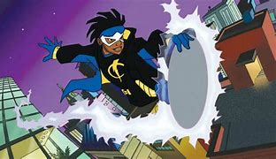

O Super-Choque é um metahumano da DC Comics, criado por Dwayne McDuffie, Denys Cowan, Michael Davis e Derek T. Dingle. Ele apareceu pela primeira vez em 1993 em Static #1
Grande parte do público conhece o Super-Choque por causa do desenho protagonizado pelo personagem, mas ele tem muita história antes e depois disso.
Desde sua origem em 1993, o herói já passou por um universo próprio e pelo universo DC, lutando ao lado de grandes grupos da editora
